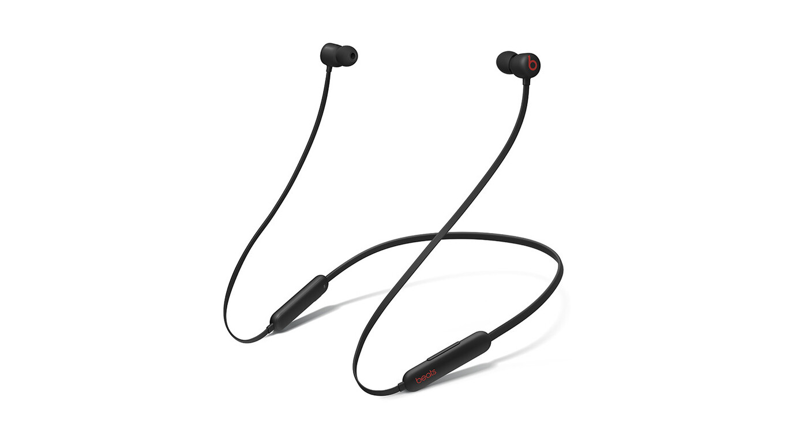

Siete cosas que Apple no dijo de sus nuevos iPhone 12 y otras tres que se esperaban y no llegaron
Hay que estar atento a lo que Apple dice de sus móviles, pero hay que estar aún más atento a lo que no dice, porque como suele decirse, el demonio está en los detalles. Y en los nuevos iPhone 12, iPhone 12 mini, iPhone 12 Pro y iPhone 12 Pro Max, más.
El evento de Apple para presentar su nueva familia de smartphones ha dado ya mucho que hablar, pero seguirá haciéndolo en los próximos meses. Nosotros hemos querido hacer un resumen no de lo que contó, sino precisamente de aquello que Apple no contó y que nos parece importante a la hora de plantear sus nuevos iPhone.
Un 5G anunciado a lo grande pero con mucha letra pequeña
Si hay un elemento que fue protagonista en la presentación ese fue el del soporte (al fin) para las redes 5G. Apple habló mucho sobre esta característica y sobre lo que puede suponer para los usuarios de los nuevos iPhone.
Sin embargo, esa conectividad no será igual para todos, algo que revela la propia Apple en su página dedicada a la conectividad móvil. Las bandas mmWave, las que ofrecen mayor velocidad de transferencia, solo están disponibles en los iPhone 12 que se vendan en EE.UU., y en el resto del mundo se soportarán bandas sub-6 GHz, es decir, aquellas que amplían cobertura pero en las que la diferencia de velocidad con respecto a 4G no será tan notable.
Además de ello, la conectividad 5G no estará activa en todo momento, y el motivo es el consumo adicional de batería que impone el uso de estas redes. Apple de hecho habló del Smart Data Mode, un sistema que permite ir cambiando de bandas 5G a bandas 4G/LTE de forma automática para ahorrar batería sin que se comprometa la experiencia de usuario.
This is truly despicable marketing from Apple: the $799 iPhone 12 is actually $829. https://t.co/BIf6kCZ5aB
— Benjamin Mayo (@bzamayo) October 13, 2020
Un detalle más: aunque no afecta más que a Estados Unidos, allí se quejaron mucho de los precios anunciados durante el evento, que también tenían letra pequeña. El precio de 799 dólares para el iPhone 12, por ejemplo, está condicionado a que lo compres en AT&T o Verizon: en Sprint, T-Mobile y otras operadoras sin subsidios cuestan 30 dólares más.
Hablemos de las baterías ya que Apple no lo hace
Normalmente Apple dedica un pequeño apartado de la presentación a mencionar a grandes rasgos qué comportamiento podemos esperar de sus iPhone en cuanto a la autonomía de la batería. Nunca da datos sobre su capacidad, sino simplemente estimaciones de la duración en situaciones como la reproducción de vídeo, de audio o, últimamente, de vídeo en streaming (más exigente).
Curiosamente en este evento no hizo ningún comentario al respecto, algo que era especialmente significativo porque sí habló de otra cosa: el diseño de estos móviles es más ligero y compacto que nunca. Presumió de ello de hecho con una diapositiva en la que indicaba cómo era un 11% más delgado que los modelos de la anterior generación.
El grosor efectivamente disminuye. De los 8,3 mm del iPhone 11 pasamos a los 7,4 mm del iPhone 12, por ejemplo, una reducción notable que tiene una consecuencia directa en la autonomía de la batería. Si el año pasado alabábamos esa decisión de Apple de volver a móviles un poco más gorditos, ahora condenamos esa vuelta a la obsesión por la delgadez y la ligereza.
De hecho seguimos sin conocer capacidades de batería en los nuevos iPhone 12 y sus variantes, pero aunque Apple no lo mencionó en su presentación, posteriormente publicó las estimaciones de autonomía de la batería y los datos hablan por sí solos.

Según esas estimaciones, los iPhone 12 Pro y los iPhone 12 mini (sin antecesor) se convierten en móviles en los que ese apartado se ve más comprometido que la generación anterior, algo que no es buena noticia.
Aquí es evidente que a pesar del prometedor micro A14 Bionic fabricado con tecnología de 5 nm la inclusión de esas pantallas OLED y sobre todo la conectividad 5G no deben ayudar mucho, pero nos tememos que el factor fundamental es ese reducido grosor de estos nuevos modelos.
La memoria crece hasta los 6 GB en los modelos Pro
Otro de los datos que Apple nunca revela en las presentaciones o en las especificaciones de producto es el de la cantidad de RAM de sus iPhone.
El año pasado los tres modelos del iPhone 11 tenían 4 GB de memoria RAM, y este año se ha desvelado ya en medios como MacRumors que los iPhone 12 y 12 mini cuentan con 4 GB, mientras que los iPhone 12 Pro y 12 Pro Max cuentan con 6 GB de RAM.
El salto es por tanto llamativo para esos modelos más ambiciosos, aunque seguimos quedándonos lejos de los 8 y 12 GB de RAM que suelen barajarse en muchos móviles de gama alta Android.
Los 120hz que pudieron ser y no fueron
Para muchos una de las características estrella de estos nuevos iPhone 12 iban a ser las pantallas Pro Motion que ya son protagonistas en algunos iPad pero que de momento no han llegado a los iPhone.
I’m told that 120hz not being implemented in iPhone 12 Pro is 100% about battery life.
— Jon Prosser (@jon_prosser) October 11, 2020
Hardware was more than capable — but it just eats through battery, and 5G drains enough battery by itself.
It was basically a choice between 120hz or 5G, and they picked 5G. Rightfully so.
Se supone que lo podrían hacer en estos modelos, pero no lo han hecho, y ni siquiera los Pro Max contarán con esa opción tan llamativa y que plantea mejoras claras en ámbitos como el de los videojuegos.
¿La razón? Analistas como Jon Prosser afirman que según sus fuentes incluir esa opción habría sido un problema importante para la autonomía de la batería, y desde luego el argumento tiene sentido.
Touch ID en el lateral
El lanzamiento de los iPad Air (2020) el pasado mes de septiembre fue llamativo no solo por la renovación de esa gama, sino por cómo eso podía plantear un anticipo de lo que llegaría a los iPhone 12.
Entre las mejoras de esas tabletas estaba la inclusión de un nuevo sensor Touch ID en el botón de encendido en el lateral de la tableta. La propuesta parecía tener todo el sentido en los iPhone 12, sobre todo en estos tiempos en los que la pandemia ha hecho que el uso de mascarillas sea habitual y complique el reconocimiento facial a través de Face ID.
De hecho contar con ambos sistemas biométricos parecía ciertamente interesante para que cada usuario eligiese el más conveniente para él en cada momento, pero Apple no ha tenido en cuenta esa opción y ha mantenido el sensor Face ID aunque las dimensiones del notch han cambiado ligeramente. Lástima de Touch ID.
¿USB-C como puerto de carga? De eso nada
Otra de las mejoras y cambios que planteaba el iPad Air (2020) era la presencia de un conector USB-C de carga. Apple decía adiós al conector Lightning en estos productos, algo que hacía pensar que quizás ese cambio también llegaría al iPhone.
No lo ha hecho: estos nuevos iPhone 12 cuentan con el conector Lightning habitual, y de hecho incluir o no un puerto USB-C ha quedado totalmente en segundo plano porque Apple ha desplazado el debate hacia otro aspecto relacionado: no incluye ya ni el cargador ni los auriculares EarPods que hasta ahora formaban parte de la caja de los iPhone.
Ya no encontraremos esos accesorios en ninguno de los iPhone que están a la venta (ni en los iPhone 12 ni en el resto del catálogo anterior que Apple sigue manteniendo a la venta), algo que ha planteado una enorme polémica y que desde luego traerá cola en los meses (y años) próximos.
Si quieres cargador (o auriculares), cómpralos aparte
Como mencionábamos, Apple ya no incluye cargador ni auriculares en ninguno de los iPhone que están en su catálogo oficial. El argumento que usaba Apple para defender esta decisión era el de la protección del medioambiente, pero como comentábamos ayer, hay otras razones de las que Apple no habló.
Razones que sobre todo son económicas, claro. Incluir un cable de USB-C a Lightning para la carga parece casi una broma de mal gusto cuando la mayoría de usuarios tienen un cargador, sí, pero no con conector USB-C sino con conector USB-A. En Apple tienen la solución: venden un cargador de 20 W con ese conector (o con el conector USB-A si lo prefieres) por 25 euros.
Lo mismo con los auriculares: Apple ya no incluye los EarPods, que ahora están disponibles en su tienda por 19 euros cuando antes de este evento su precio era de 29 euros. Esa rebaja es de agradecer, pero es que ahora esa compra es "obligatoria" para quien quiera al menos tener unos auriculares básicos para su iPhone.
Un dato igualmente llamativo que no habla muy bien de Apple: justo cuando salen los iPhone 12 sin auriculares inalámbricos decide lanzar —sin mencionarlo en el evento ni de forma notable en su web— los nuevos Beats Flex, que por 49,95 euros se convierten los más baratos con esa conectividad inalámbrica de todo su catálogo. ¿Casualidad? Va a ser que no.
El misterioso escudo ceramico
Muy poquito habló Apple del "escudo cerámico", esa nueva capa de protección en los iPhone 12 que supuestamente hace que sean cuatro veces más resistentes a las caídas.
Luego hemos conocido algunos detalles más en la página de producto de los iPhone, eso sí. Esta capa ha sido desarrollada por Corning y es una evolución más de sus GorillaGlass. En este caso se insertan cristales de nanocerámica en el vídrio en una cpaa más resistente pero que aún así mantenía la transparencia adecuada.
Además de ello Apple asegura que además de duros, estos cristales son más resistentes a arañazos, algo que consiguen teóricamente con un "proceso dual de intercambio de iones" en el cristal trasero.
Zoom engañoso: no es 5x, es 2,5x
Al hablarnos de las capacidades de las nuevas cámaras de los iPhone 12 Pro Max, Apple destacó por ejemplo esos nuevos sensores que permitían que con el telefoto se lograran zooms de hasta 5 aumentos.
Lo cierto es que ese número no es del todo honesto. Varios fueron los analistas que quisieron poner los puntos sobre las íes. Esos aumentos hacían referencia a lo que se ganaba desde la cámara ultra gran angular al telefoto: ahí si se consiguen esos aumentos, pero es que el zoom no se tiene en cuenta con el super gran angular, sino con la lente "1x" que usamos habitualmente.
I see that many people still don’t understand that the new iPhone 12 Pro and 12 Pro Max DON’T have 4x and 5x optical zoom... it’s optical zoom RANGE, from 0.5x Ultra Wide to 2x and 2.5x Telephoto optical zoom in pic.twitter.com/xgNCbqtLdE
— Ben Geskin üì∏ü챂åöÔ∏è (@BenGeskin) October 14, 2020
Teniendo eso en cuenta, el zoom máximo en los iPhone 12 Pro Max es 2,5x, y no 5x como parecen apuntar desde Apple incluso en la información de producto. En el caso de los iPhone 12 Pro el zoom es 2x, como en los iPhone 12 y iPhone 12 mini.
Adiós al iPhone 11 Pro y al iPhone 11 Pro Max (pero no al iPhone 11)
Durante la presentación se suele hablar de cómo queda el catálogo de los iPhone, pero ahí siempre pueden surgir dudas sobre qué modelos se quedan en el catálogo y qué modelos salen de él.

En esta ocasión por ejemplo no se aclaró que aunque el iPhone 11 sí se seguirá vendiendo, sus hermanos —los iPhone 11 Pro y iPhone 11 Pro Max- dejarán de estar disponibles.
El catálogo de Apple desde luego se convierte ahora en mucho más completo y abarca prácticamente todas las franjas de precios desde los 400 dólares hacia arriba, pero los nuevos modelos hacen que efectivamente otros desaparezcan del catálogo oficial de la compañía (aunque puedan encontrarse aún en algunos puntos de venta o como modelos de segunda mano).